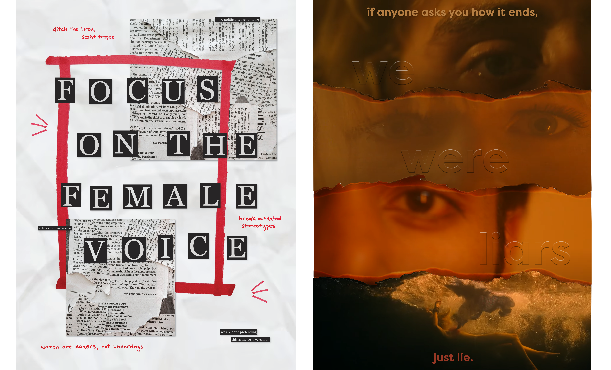

A series of passion posters spanning sports, music, and media, or anything that catches my eye. Each design is a self-directed exercise in bold typography, color, and composition, built to capture the energy and culture surrounding its subject. The collection lives on Instagram and grows whenever inspiration strikes rather than on any set schedule, but even in the gaps between posts, this remains one of my favorite ongoing creative outlets.
Instagram: @des.byleah



Website Hand Coded by Leah Mozeleski
Best Viewed on Desktop